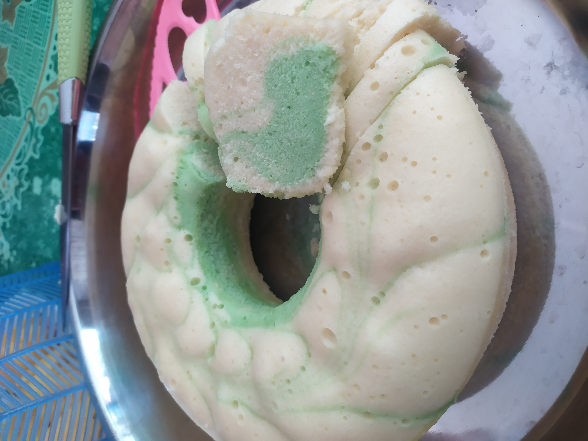
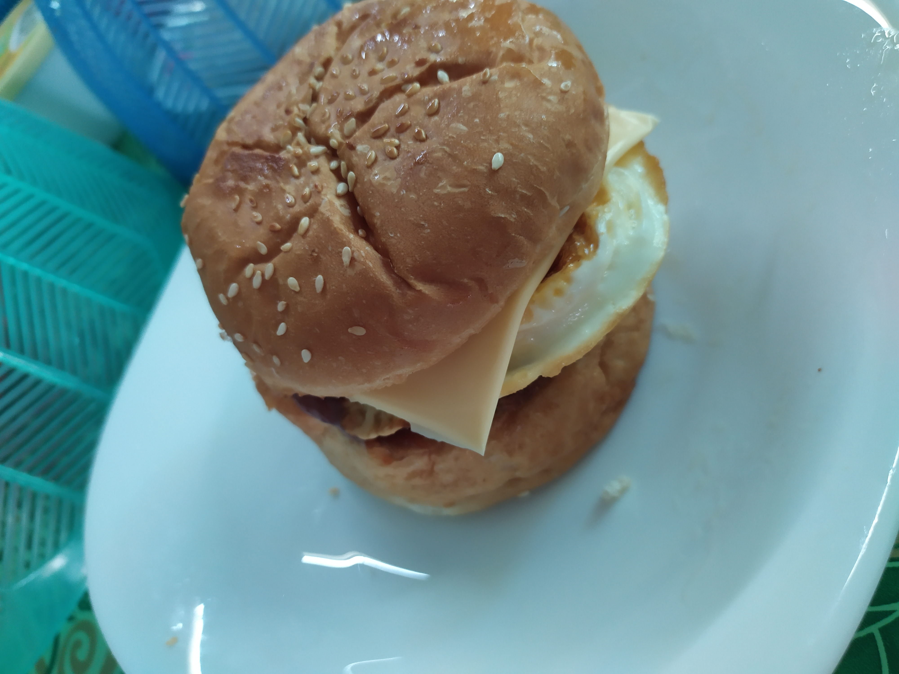

In the morning after woke up, I will spend my time play with my little sister.
Her name is Angela Inchin hehe. She is very playful. She likes to play non-stop from morning until night. Haha! She's now 1 years 4 months. Her age range and me is between 19 years. This is because she is from another mother, stepmother. My birth mother has passed away when I am 15 years old. She had cancer pancreas. I believe that everything happens to us there are reason behind it.
Hai! Good Afternoon Dear Viewer~ ⛅
Let me start show my routine! HAHA! This is my first for try for the recipes.

♣ Afternoon came.. How about start baking so that the time were well used! The first picture from the left is Apam Susu! I, at first just want to try to use the simple recipes from google to do some baked. Then I found that the recipes of this Apam Susu and the instruction is easy for me to follow. Also, the ingredients of that apam are all available in my home.♣ Next, the picture on the center is donut. This was the request from my stepmother. So I just try to find the recipes in Mr.Google with hope that the donut will become soft and fluffy. I am a bit sad. The result that I got was not that fluffy. Nevermind.. This was first try..♣ Lastly, the last picture on the right is chocolate cake made by my stepmother with the assistant of me! Hahahahaa... This special cake is for my dad's birthday cake. The result is...... very yummyyyyy then the bakery made! My dad also like it very much. We are very happy to hear that. Besides can save family's budget, this also can strengthen the family's relationship.
So how was that? Hehe
Good Evening Everything!✋
🌈

Eat eat eat and eat! That is my routine before the online classes season stared. The burger🍔 on the left also made by me with full of love💞 Hehehe.. Except for the pizza was booked by the application in phones.